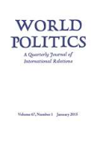
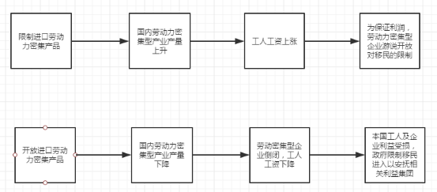
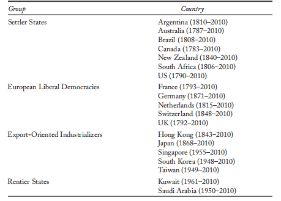
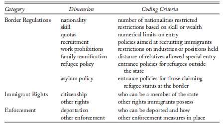
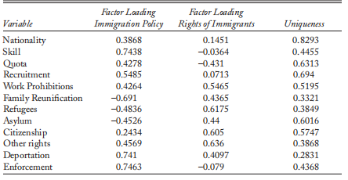
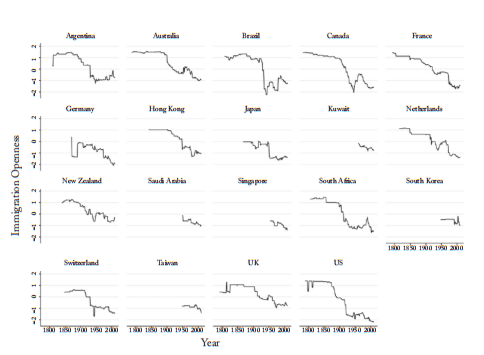
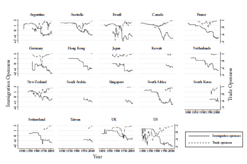
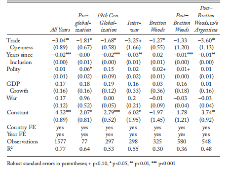

收录于合集

作品简介
【作者】 Margaret E. Peters，玛格丽特·彼得斯，加州大学洛杉矶分校政治学系副教授，其研究兴趣主要为国际政治经济学，特别是移民政治。彼得斯的学术著作广受认可，曾发表在《国际组织》、《世界政治》等期刊上。
【 编译】 刘瑛琛（国政学人编译员，吉林大学公共外交学院）
【校对】 杨洋
【审核 】 金磊 兰星辰
【排版】 梁鑫昱
【 来源 】 Peters, M. (2015). Open Trade, Closed Borders: Immigration in the Era of Globalization. World Politics , 67(1), 114-154
期刊介绍

World Politics, 世界政治，该刊创立于1948年，是国际知名的政治科学季刊。2018年其影响因子为3.368，在176个政治学刊物中排名15,91个国际关系刊物中排名第7。
开放贸易与封闭边界： 全球化时代的移民政策 Open Trade, Closed Borders: Immigration in the Era of Globalization
玛格丽特·彼得斯
内容提要
作者首先提出：我们该如何解释移民政策，特别是那些有关低技术工人的移民政策的变化？对于这一问题，政治学家目前给出了四种解释，分别是：对外国人的偏见使各国拒绝移民；本国工人通过排斥移民来保护自身利益；政府因担心移民造成的财政成本而关闭边界；以及移民团体通过游说影响一国移民政策。然而，作者认为，现存的这四种理论仅仅依靠国内因素解释移民政策的变化，却忽略了制定这些移民政策的国际环境，因此并不具备足够的解释力。作者从历史中发现，贸易和移民几乎从不同时开放，而且世界各国在同一时期常常选择同一种政策组合，或是开放贸易而限制移民进入，或是限制自由贸易同时放开移民政策。那么我们又该如何解释以上现象？在文中，作者首先根据斯托尔珀—萨缪尔森定理(
Stolper-Samuelson Theorem
），详细论述了贸易政策与移民政策二者之间的经济联系，并进一步结合各种政治经济因素，提出“贸易的开放将导致对移民的限制，而封闭的贸易政策将使国家开放移民政策”这一论点。其次，作者回顾了各个历史时期的贸易政策与移民政策，从经验上证实了以上论点。最后，作者对19个国家在1783-2010年间的移民数据进行了定量分析，更为严格地检验了贸易和移民政策之间的关系。
**
** 文章导读
一、 贸易政策影响移民政策的逻辑
根据斯托尔珀—萨缪尔森定理，开放贸易将通过劳动力、商品与资本的流动，同时影响一国商品价格水平与劳动力工资水平，这将提高该国出口产品生产中密集使用的生产要素（也就是本国充裕的生产要素）的报酬，同时降低该国进口产品生产中密集使用的生产要素（也就是本国稀缺的生产要素）的报酬。依照该定理的逻辑，作者假设了一个高度抽象的经济体来论证开放贸易与移民政策二者的经济联系。这一经济体受到贸易政策的外生性影响，缺乏低技术工人，同时也不受政体类型、殖民历史以及民族文化等因素的影响。在这种理想条件下，贸易政策对移民政策的具体影响如图1所示（图1为译者绘制）。由此可见，一国将会在开放贸易的同时限制移民进入，或是在限制自由贸易的同时放开移民政策。
图 1 理想条件下贸易政策对移民政策的影响

接下来，作者将这一高度抽象的经济体变得更为现实，以此来进一步论证以上结论。首先，经济方面需要考虑生产力提高与企业两个因素。一方面，当一国自由贸易受到限制时，企业也可以通过提高生产力来应对劳动力成本的上升，以此降低对劳动力的需求，进而不再需要放开移民限制。但作者认为，当一国开放贸易时，企业同样可以通过提高生产力以降低对劳动力的需求，因此生产力的提高无论如何都将导致移民政策走向更为封闭的局面，这一因素可以被视为一个常量。另一方面，现实中企业并不像假设中那样，一旦开放贸易就会面临倒闭的危险。相反，这些企业将继续经营下去，并游说政府放开移民限制或者提供税务补贴以降低成本。但作者认为，放开移民限制将导致反移民浪潮，提供税务补贴将导致贸易伙伴的报复与财政支出增加，因此，政府或将衡量成本与收益，有选择地让一部分企业倒闭。其次，作者考虑到，如果贸易政策的改变并非外生性的将会如何？换句话说，有没有可能是政策制定者根据偏好主动选择的贸易政策与移民政策？作者认为，政策制定者对贸易政策的选择要受到企业提供的资金支持与全体选民的福利待遇两方面影响。因此，无论政策制定者的偏好如何，选择何种贸易政策，受益于这一贸易政策的产业所提供的政治支持必须能够弥补政策制定者在其他产业上损失的政治支持。因此，在一个内生性贸易模型下，开放的贸易政策同样将伴随封闭的移民政策。最后，有没有可能是移民政策带来贸易政策的改变？在作者看来，如果移民政策是自变量，那开放的移民政策与开放的贸易政策二者之间将相互补充，或者这两者之间不存在任何联系，但不可能出现开放的贸易政策与封闭的移民政策同时存在的情况。再者，有没有可能是其他被忽略的变量同时改变了贸易政策与移民政策？作者认为，影响政策与移民政策的变量有很多，比如民主政体或者体系中存在霸权，作者接下来会在考虑进这些因素的情况下检验贸易政策与移民政策之间的关系。
二、 历史上的贸易政策与移民政策 ****
19世纪是一个贸易政策相对封闭但移民政策较为开放的时期。在这一时期，大多数国家出于增加财政收入与保护本国工业的需要，严格限制对外贸易。但由于国内工业的发展，工资水平上涨，企业需要更多的移民。例如，1875年，俾斯麦提高了德国的关税以削弱民族自由党和增加政府财政收入。在这不久之后，俾斯麦一改之前大规模驱逐波兰人的政策，而向波兰工人开放了边界。但在这一时期，英国和法国的政策较为例外，这两国奉行相对开放的贸易政策，同时较其他国家更为限制移民进入。19世纪末，技术的发展促使各国往来日益密切。许多国家开始削减贸易壁垒，并因对劳动力的需求下降而对移民关闭了大门。在“大萧条”之后，各国经济受到重击，纷纷放弃自由贸易政策，对移民的限制更不可能放开。尽管这一时期的历史与本文“封闭贸易将导致更为开放的移民政策”的论点不一致，但我们有理由认为，在“大萧条”这样的特殊时期可以存在例外。而在二战之后，大多数国家接受了自由贸易的政策，却严格限制移民进入。战后建立的“布雷顿森林体系”确立一系列国际机制以保障自由贸易，然而，除了对战争难民的安置，战后的一系列会议都没有将移民政策纳入议程之中。相反，由于担心大量贫穷的难民涌入以及共产主义的威胁，西欧各国十分反对移民。20世纪后期，像日本这样的出口导向性国家也同时奉行着开放的贸易政策与封闭的移民政策。而像沙特和科威特这样的国家在二战结束初期相对限制贸易开放却大量接受低技术工人，近些年又出于发展本国高附加值产业的需要提高的贸易开放度而限制移民进入。
三、 1783-2010年间贸易政策与移民政策的量化模型
研究移民政治的一大阻碍就是数据的缺失。 为了弥补这一缺漏，本文选取了19个国家在过去225年间的合法移民的数据进行量化分析。本文选取的19个国家或类国家经济体具体如表1所示。相对于世界大部分地区或它们的邻国而言，这些国家或类国家经济体都较为富裕并且且缺乏低技术劳动力。为方便研究起见，作者根据贸易政策、土地丰富程度、社会福利等因素将这19个国家划分为四个类型，分别为定居者国家（ Settler States ）、欧洲自由民主国家（ European Liberal Democracies ）、出口导向型工业国（ Export-Oriented Industrializers ）与食利者国家（ Rentier States ）。用于研究的这些数据有两点需要进行说明：第一，对于联邦制国家，作者选择了对移民最为开放的成员的数据作为整个国家的代表，这是因为联邦内部各成员间的人口流动相对自由；第二，由于获取数据的限制，本数据库中各国的移民数据范围从该国能够有效管控其移民政策的第一年起到2010年止。 表1 数据库所包含的国家（地区）及时期

关于移民政策的分析相对复杂，因为移民政策是多种政策的混合物，表2列举了移民政策涉及的不同维度，并给出了简短的介绍。
表2 移民政策的不同维度及其简介

一国移民政策的目标无疑是增加或减少移民的数量。尽管学界就移民政策的不同维度如何影响移民数量尚未达成共识，但具体政策的差异无疑会对移民造成不同的影响。因此，作者使用了主成分分析法对移民政策的不同维度进行了降维，原有的众多维度形成了两个因子：移民政策与移民权益。前者更多关注移民的原国籍、移民的技能、接收国企业雇佣移民的政策、移民配额、驱逐移民的政策与其他涉及移民的强制措施，后者则更多关注移民的家庭团聚问题、难民政策、避难条件、给予移民公民身份的政策、移民的工作限制以及其他的移民权益。表3展示了移民政策与移民权益两个因子的因子载荷。因此，作者更为关注移民政策因子。在图2中，作者展示了各国的移民政策的变化，各国各时期的移民政策处于-2—2之间，数值越高意味着移民政策越开放。
表3 因子载荷

图2 各国不同时期的移民政策

接下来，作者通过未纳税进口额的百分比衡量了过去225年贸易政策的变化，并在图3当中同时展示了各国在不同时期的贸易政策与移民政策。各国在各时期的贸易政策与移民政策都在-2—2之间变动，数值越高意味着该时期的贸易政策/移民政策更加开放。
图3 各国不同时期的贸易政策与移民政策

在表4中，作者通过使用普通最小二乘法（OSL）将y（移民政策）对x（贸易政策）进行了回归，更加精确地检验了贸易政策与移民政策两者的关系。从表4中我们能够发现，贸易政策与移民政策之间存在着显著的负相关关系。当然，后布雷顿森林体系时期的阿根廷是一个例外。在1983年结束军政府独裁之后，阿根廷接受了新自由主义经济政策，并向移民开放，这种特殊的历史与本文的论点不符。直到最近，阿根廷才开始限制移民进入。
表4 各时期移民政策对贸易政策的回归

四、 结 论 ****
本文通过检验大量有关移民政策的数据（这些数据涵盖了不同的国家与不同的时期），得出了以下结论： 无论在政治上还是经济上，开放的贸易政策与开放的移民政策都相互替代。
作者认为，这一结论既考虑到了政策制定的国际背景以及经济因素对政治的影响，弥补了许多学者仅从国内政治因素解释移民政策的不足；又实证检验了许多经济学家关于贸易政策与移民政策两者关系的预测，并详细解释了这种联系中的政治逻辑。此外，作者还提出，在不考虑贸易政策的情况下，我们就无法理解移民政策；同样，我们也应当在考虑到移民政策的情况下对贸易政策或其他对外经济政策进行检验。
_ ** _ ** _ ** _ 本文由国政学人独家编译推荐**__
扫下方二维码查看往期精彩
【新刊速递】第01期 | Review of International Studies Vol.45, No.4, 2019
【新刊速递】第02期 | International Relations Vol.33, No.3, 2019
【新刊速递】第03期 | International Organization Vol.73, No.3, 2019
【新刊速递】第04期 | World Politics, Vol.71, No.4, 2019
【新刊速递】第05期 | European Journal of International Relations
【新刊速递】第06期 | Security Studies, Vol.28, No.4, 2019
【新刊速递】第07期 | International Secur.ity, Vol 44, No. 2, 2019
【新刊速递】第8期 | Cambridge Review of International Affairs,Vol.32,No.4
【新刊速递】第09期 | International Relations of Asia-Pacific Vol.19,No.3
分类导览 1
分类导览 2

点“在看”给我一朵小黄花